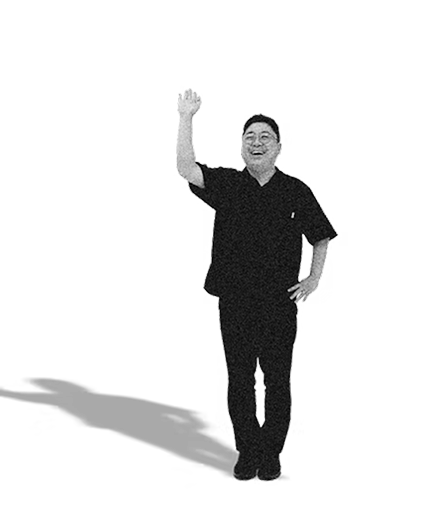

도시마다 고유한 정체성을 만들어 갑니다
로고 하나,
글자 하나에도
그 도시만의 결이
살아 숨쉬도록
손끝으로
도시의
정체성
을
담아내다
지역의 이름에는 수백 년의 시간과 수많은 사람들의 기억이 담겨 있습니다.
도시브랜드연구소는 그 보이지 않는 이야기를 꺼내어
눈에 보이는 형태로 빚어냅니다.
지역을 살아가는 사람들의 자부심이 될 수 있는 다양한 맞춤형 도시 브랜드 디자인 서비스를 제공합니다.
LOGO DESIGN
로고 디자인
도시의 정체성을 시각적으로 구현하다
도시의 역사와 지형, 사람들의 이야기를
한 장의 그림으로 압축합니다.
처음 보는 순간부터 그 도시가 떠오르는,
오래 기억되는 얼굴을 만듭니다.
FONT DESIGN
폰트 디자인
도시의 이야기와 목소리를 담다
그 도시에서만 들을 수 있는 목소리를
발견하고, 그것을 서체로 옮겨 냅니다.
지역의 숨결과 온도를 담아, 어디에서 사용해도
그 도시의 자부심을 느끼게 합니다.
CONSULTING
컨설팅
도시의 고유한 가치를 극대화하다
브랜드는 로고 하나로 완성되지 않습니다.
도시의 정체성을 발굴하는 연구부터 고유한 매력을
최대로 끌어낼 수 있는 전략 수립까지,
모든 과정을 함께합니다.
각 도시의 이야기를 담은 프로젝트를 진행합니다.
강원 영월군
FONT DESIGN
영월의 자연 풍경과 지역 상징을 손글씨 기법으로 풀어내어 도시의 정체성을 시각화할 수 있도록 전용 서체 '영월체'를 개발하였습니다.
로고 하나, 글자 하나에도 그 도시만의 결이 살아 숨쉬도록
토폴라
LOGO DESIGN
토폴라의 영문 텍스트와 이진법의 심볼을 레이어드 기법을 적용하여 교육의 본질에 대한 정체성을 나타낼 수 있도록 로고 및 키비주얼을 리뉴얼 하였습니다.
토폴라
LOGO DESIGN
토폴라의 영문 텍스트와 이진법의 심볼을 레이어드 기법을 적용하여 교육의 본질에 대한 정체성을 나타낼 수 있도록 로고 및 키비주얼을 리뉴얼 하였습니다.
토폴라
LOGO DESIGN
토폴라의 영문 텍스트와 이진법의 심볼을 레이어드 기법을 적용하여 교육의 본질에 대한 정체성을 나타낼 수 있도록 로고 및 키비주얼을 리뉴얼 하였습니다.
토폴라
LOGO DESIGN
토폴라의 영문 텍스트와 이진법의 심볼을 레이어드 기법을 적용하여 교육의 본질에 대한 정체성을 나타낼 수 있도록 로고 및 키비주얼을 리뉴얼 하였습니다.
토폴라
LOGO DESIGN
토폴라의 영문 텍스트와 이진법의 심볼을 레이어드 기법을 적용하여 교육의 본질에 대한 정체성을 나타낼 수 있도록 로고 및 키비주얼을 리뉴얼 하였습니다.
토폴라
LOGO DESIGN
토폴라의 영문 텍스트와 이진법의 심볼을 레이어드 기법을 적용하여 교육의 본질에 대한 정체성을 나타낼 수 있도록 로고 및 키비주얼을 리뉴얼 하였습니다.
영월체는
영월의 아름다운 자연을 글꼴에
담아 제작하였습니다.
부드러운 곡선은 동강과 서강,
요선암에 흐르는 물길을 닮았고,
단단한 직선은 석회암 절벽 선돌처럼
우뚝 선 바위를 떠올리게 합니다.
16px
도시브랜드연구소가 만든
서체를 체험해 보세요
지역의 이름에는 수백 년의 시간과 수많은 사람들의 기억이 담겨 있습니다.
도시브랜드연구소는 그 보이지 않는 이야기를 꺼내어.
(0/100)
도시브랜드연구소를 말하다
도시브랜드연구소는 단순한 디자인을 넘어,
지역 고유의 이야기와 가치를 담아 브랜드를 창조합니다.
이를 통해 브랜드 이미지 강화와 지역 주민과 방문객 모두가
사랑하는 공간을 만들어 갑니다.
Founder & CEO.
ARTICLE
도시브랜드연구소의 다양한 활동들을 글과 영상으로 만나보세요.
ARTICLE 바로 가기지난 11년 간 105+ 개 이상의
프로젝트를 진행했습니다!

105+
Projects
11년의 노하우가 있는
도시브랜드 연구소와
지금 함께하세요!